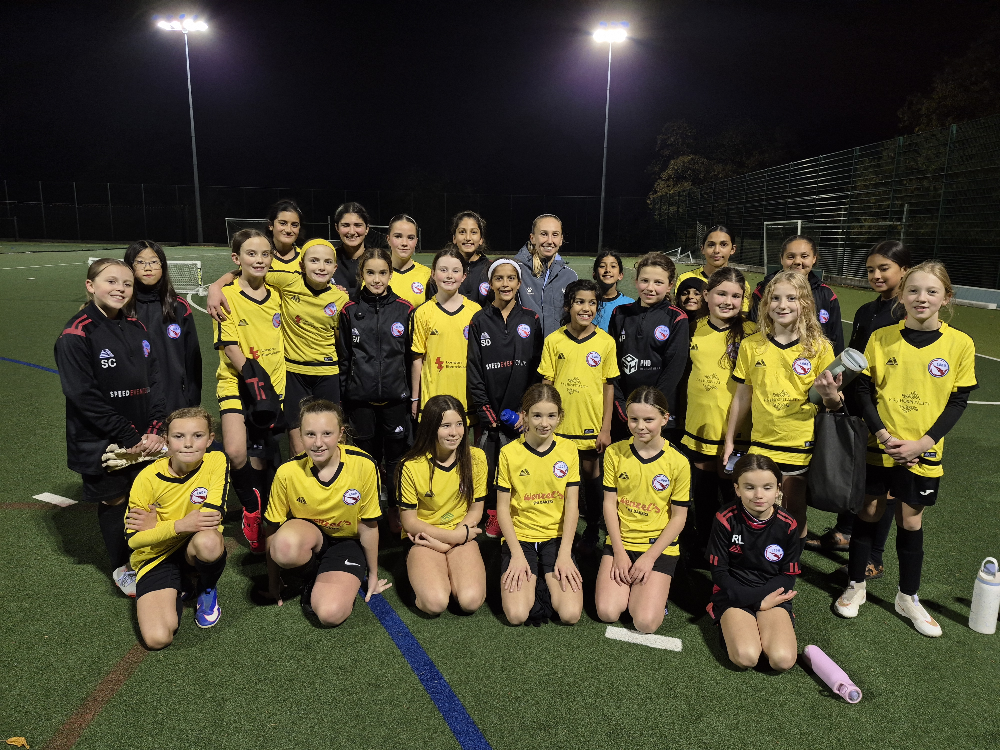
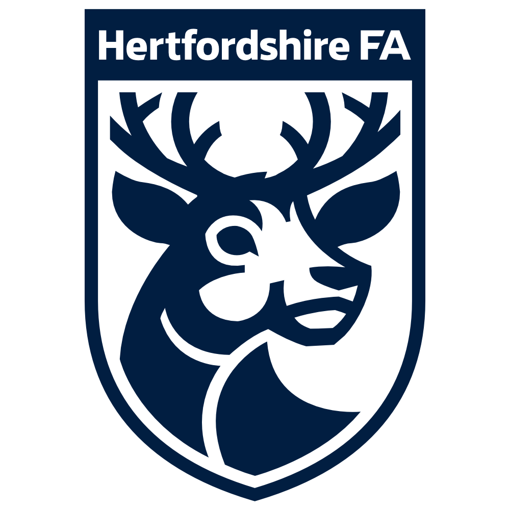
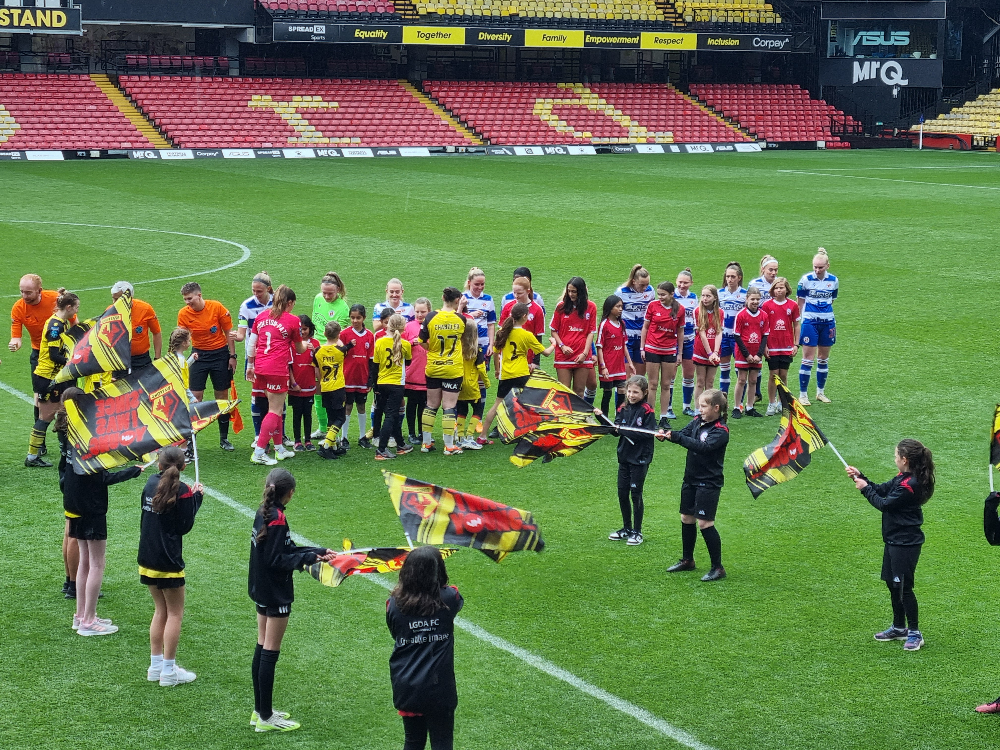
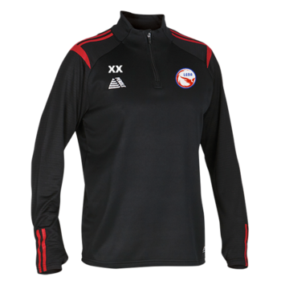
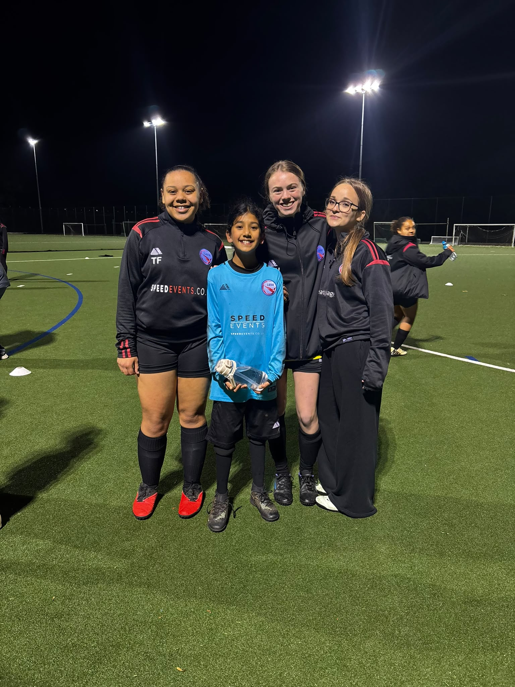
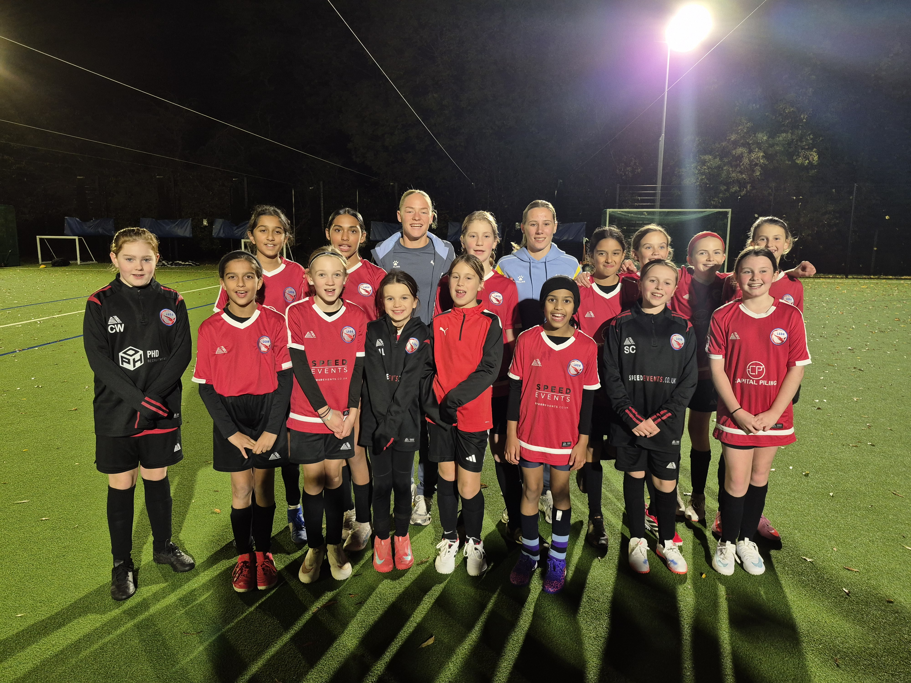

About LGDA
Learn, Grow, Develop, Achieve

We provide football in a safe and welcoming environment to female players from all ethnic backgrounds and any ability, including those who have not played football before. We do not aim to recruit only ‘elite’ players. We prefer to develop players into being the best that they want to be, helping them build confidence, sporting and social skills by letting them express themselves and make their own decisions.
Despite the club only forming in 2019, girls from LGDA, most of whom started their football journey with us, have already had great achievements. Players have been selected for development programmes with Watford FC, Stevenage Borough and MK Dons, and have reached national finals, won the schools county cup and won district competitions in their school teams.

Life at LGDA
Beyond the pitch

Matchday experiences
Our players have been mascots and flag bearers for Watford FC Women on more than one occasion, and ball-girls for Arsenal. Players and their families also get special offers to go to Watford FC Women matches.
Awards Day
Our end-of-season awards, with trophies for players, bring all of our teams together to celebrate.

Meet the players
Professional players from Watford FC Women have visited our training sessions to join in with the girls, with photos and autographs.
Club and team trips
Our end-of-season trips have taken us to tournaments, on roller coasters and to the beach, with players and families having fun together.

Coaching and mentoring<
We encourage and enable our players to help coach younger age groups, often as part of their Duke of Edinburgh volunteering, and to take coaching and refereeing qualifications. It builds leadership skills and self-confidence, and gives our younger players role models and mentors within the club.
Christmas Party
Our club Christmas Party is for all players and their families.
Matches
We are based in Watford, Hertfordshire, affiliated to the Hertfordshire Football Association and play in the Hertfordshire Girls Football Partnership League. We are also an FA Accredited Youth Football Club.
Home matches
Sun Postal Sports & Social ClubBellmount Wood Ave
Watford
WD17 3BN

Training
All of our teams train on both Tuesdays and Thursdays. Both sessions are held on grass at Sun Sports during the drier months. Over the winter we move to astroturf venues nearby in Rickmansworth.
Policies and safety
We are run by volunteers, all of whom hold Enhanced DBS checks, and all coaches have FA and/or UEFA qualifications.
Our standards show the girls the importance of respect, working together as a team and discipline. We fully support the FA Respect Codes of Conduct, and it is a condition of joining that parents or carers agree to abide by our code of conduct.
Any action which brings the club’s reputation into question, or threatens or disrespects coaches, players, match officials, opposition teams or anyone involved in running the club or its competitions, will be treated with the utmost seriousness.
Codes of conduct and policies
Safeguarding
LGDA takes safeguarding very seriously. To raise a complaint or concern, please contact our Child Welfare Officer in the first instance: laura.evans@lgda.co.uk